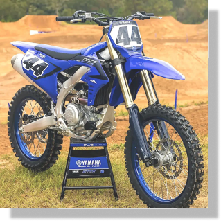

Yamaha Yz 450 F
Motor: Monocilíndrico, 4 tiempos, 4 válvulas, DOHC, refrigerado por líquido.
Cilindrada: 450 cc.
Velocidad máxima: 145 km/h.
Alimentación: Inyección electrónica, programable con mapas.
Transmisión: 5 velocidades.
Frenos: Delantero y trasero a disco.
Suspensión Delantera: Horquilla invertida oleoneumática.
Suspensión Trasera: Monoamortiguador progresivo con botella de gas separada.
Capacidad del Tanque: 6,2 litros.